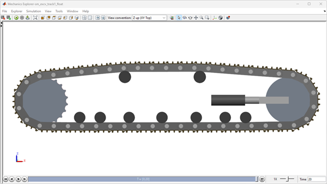
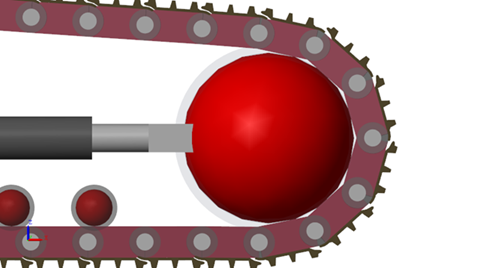
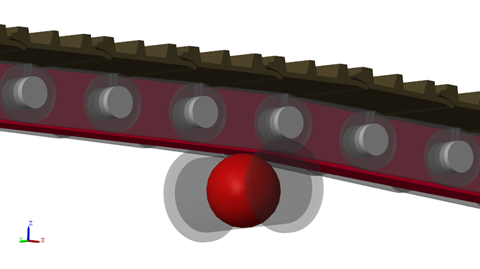
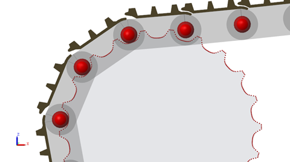
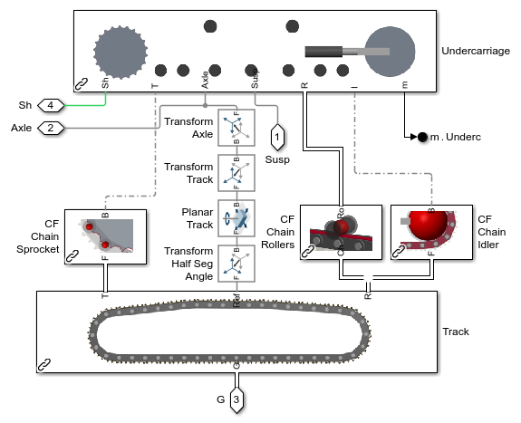
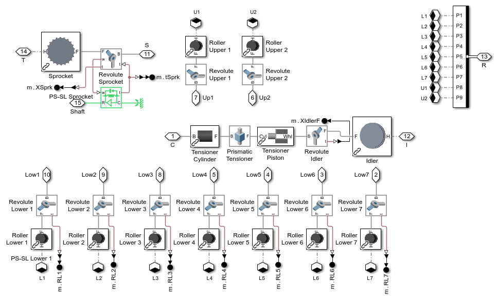
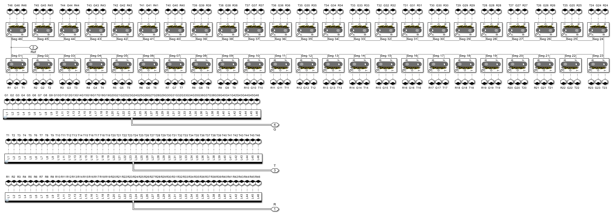

Excavator Track (Single) Suspended in Air

(return to Tracked Vehicle Model with Simscape Overview)
This example models a single track from an excavator. The track is suspended in the air and has no contact with the ground. This test harness model enables faster testing of track segment layout and contact force parameters within the track. The sprocket is driven with a flexible driveshaft.
Contents
Model
In this example, one track is modeled and half of the excavator mass is centered on the track. This enables faster adjustments of the track model which can then be mirrored to the second track.

Track Subsystem
The track is composed of the undercarriage and the track segments connected into a loop. The undercarriage contains the rollers, sprocket, and idler which are rigidly attached to the frame. These are connected to the track chain through three sets of contact forces.
1. The chain wraps around the idler

2. The rollers roll along the chains

3. The chain pins mesh with the sprocket teeth

The Planar Track joint positions one of the chain pins at a gap between the sprocket teeth which is positioned facing the rear of the track. Joint targets applied to the track segments helps it to mesh with other teeth on the sprocket and loosely wrap around the rollers and idler. The block Transform Half Seg Angle orients the interface frame so that the two chain segments attached to that pin will wrap around the sprocket.
Rollers Subsystem
This subsystem models the rollers, idler, and sprocket. They each can rotate around shafts attached to the lower frame. A spring is included in the Prismatic Tensioner joint that pushes the idler against the chain to maintain tension.
The sprocket joint interfaces to 1D mechanical rotational port. This represents a mechanical shaft connection to the sprocket. It can be attached to Simscape models of gears, hydrostatic transmissions, and electric motors.
The bus of connections at port R contains the connections to the geometry that is used to model contact between the rollers, idler, and sprocket to the chain.
Track Subsystem
A set of track segments are joined using Revolute Joints to model the track. The joints are contained in each segment. Joint targets are assigned in the mask to ensure the track meshes with the sprocket and wraps loosely around the rollers and idler.
Track Segment Subsystem
Each track segment is composed of a chain link and a shoe. To streamline the contact force calculation, simpler geometry is connected to the Spatial Contact Force block.
- A sphere is used to model the pin contacting the sprocket.
- A brick is used to model the chain contacting the rollers and idler.
- A point cloud is used to model the shoe plate contacting the ground (for this model, no contact with the ground is modeled).

Simulation Results
Below are the simulation results from a test where the sprocket is driven as the track is suspended in the air. To help keep the track taut around the rollers, gravity is applied from the idler to the grouser.
Elapsed Sim Time = 104.0233